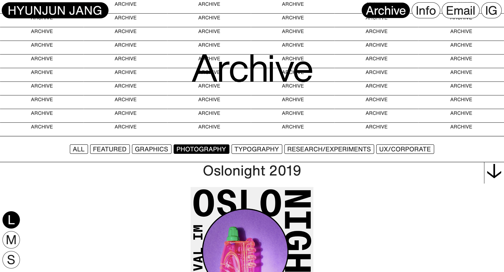
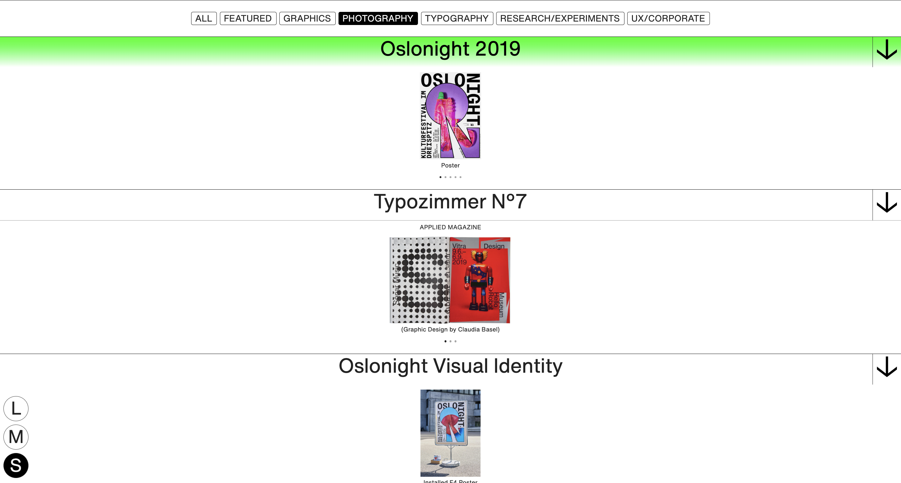
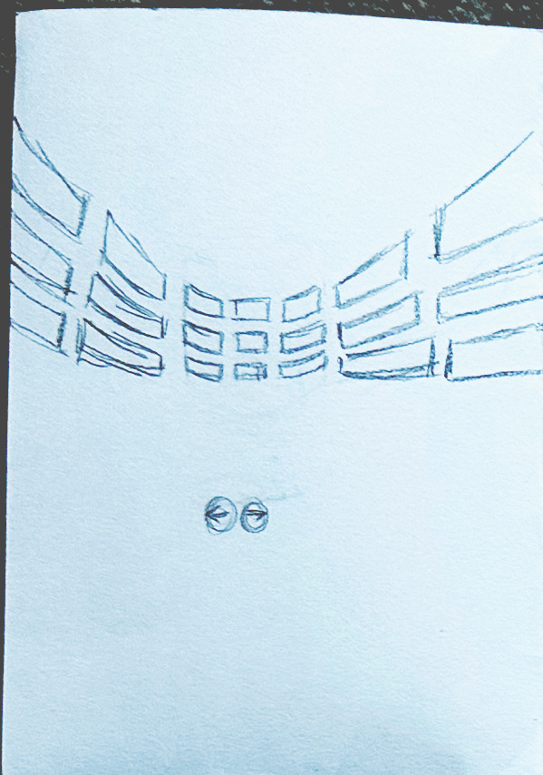
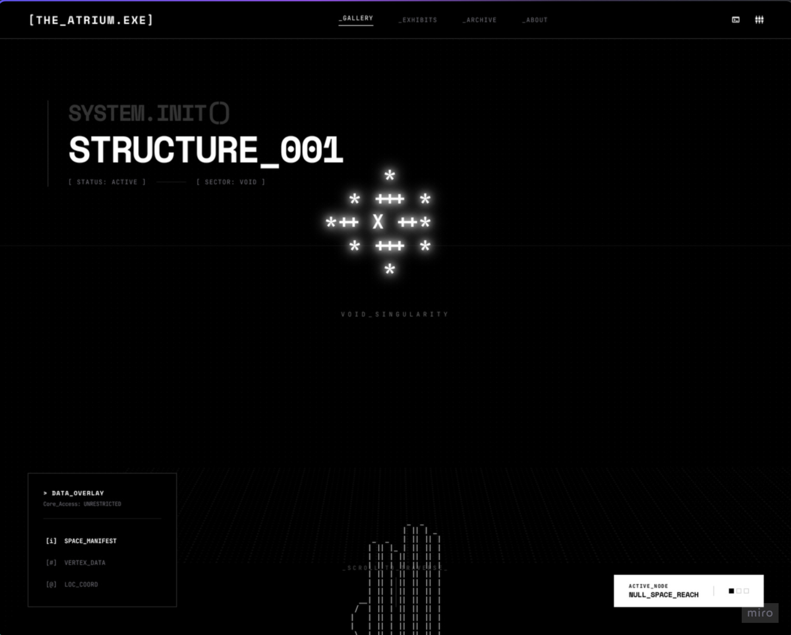

HyunJun Jang's representation of what an archive could look like — the top half.

tdingsun's representation of what an archive could look like. It doesn't have the
same visual aspect as HyunJun Jang's site, but you're able to see vital information regardless.

HyunJun Jang's representation of what an archive could look like — the top half.

It also has a nice animation (that changes its colour) to show that users that they're clicking on it or
hovering on it.

My prompt was "make a website where the
user is inside a 3d room with a scrollable floating gallery in front of them".
It didn't really work the way I wanted it to, looking generic and flat instead.

This was how I actually wanted the website to look like, with a scrollable, interactive gallery
that the user could interact with through clicking on the buttons below. It would curve around the user's screen.

My prompt was "make a website where the
user is inside a 3d room with a scrollable floating gallery in front of them".
It didn't really work the way I wanted it to, looking generic and flat instead.

This was how I actually wanted the website to look like, with a scrollable, interactive gallery
that the user could interact with through clicking on the buttons below. It would curve around the user's screen.